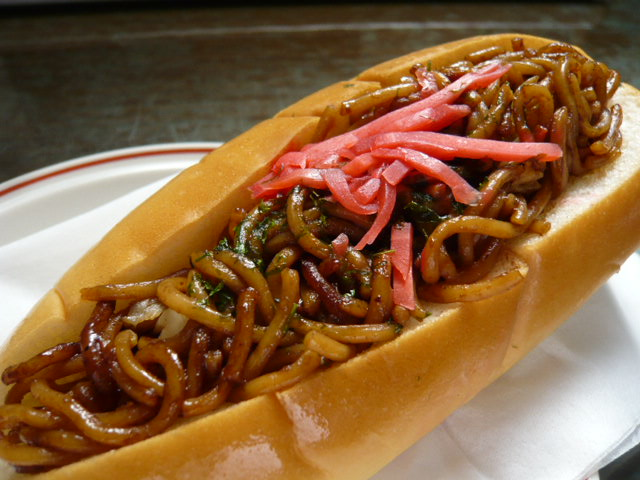

Yakisoba Pan

Street snack of stir-fried noodles in a split-top hot dog bun.
Chefs make this popular Japanese dish with “Chinese-style” noodles, diced meat (usually pork belly, but sometimes chicken), and veggies, which they toss with a thick, sweet sauce similar to Worcestershire sauce.
Ingredients
- 1 tbsp neutral-flavored oil (vegetable, rice bran, canola, etc)
- 8 hot dog buns
- butter, as needed
- 11 oz (320g) yakisoba noodles (2x5.5 oz/160g packages)
- 4-5 tbsp Worcestershire sauce
- 1 tbsp oyster sauce
- aonori (dried green seaweed) (to serve)
- pickled red ginger (beni shoga or kizami beni shoga) (to serve)
- Japanese mayonnaise (to serve)
Directions
- Make a slit on top of each of the hot dog buns, then spread the insides with butter.
- Slice the yakisoba noodles in half. Reduce heat to low and stir vigorously until the mixture forms a ball, about 1 minute. Remove from heat and beat in the eggs one at a time. Spoon the mixture into a pastry bag fitted with a large star tip.
- Heat the oil in a large frying pan or a cast-iron skillet.Heat the oil in a large frying pan or a cast-iron skillet.
- Add the noodles and cook shortly, taking care to loosen the strands.
- Then, add the Worcestershire sauce and the oyster sauce and mix, then take off the heat. Reduce heat to low and stir vigorously until the mixture forms a ball, about 1 minute. Remove from heat and beat in the eggs one at a time. Spoon the mixture into a pastry bag fitted with a large star tip.
- Tuck the noodles inside the buns.
- Sprinkle with dried green seaweed, and top the center of each bun with pickled red ginger. Finally, top with Japanese mayonnaise, if desired.
Return to homepage